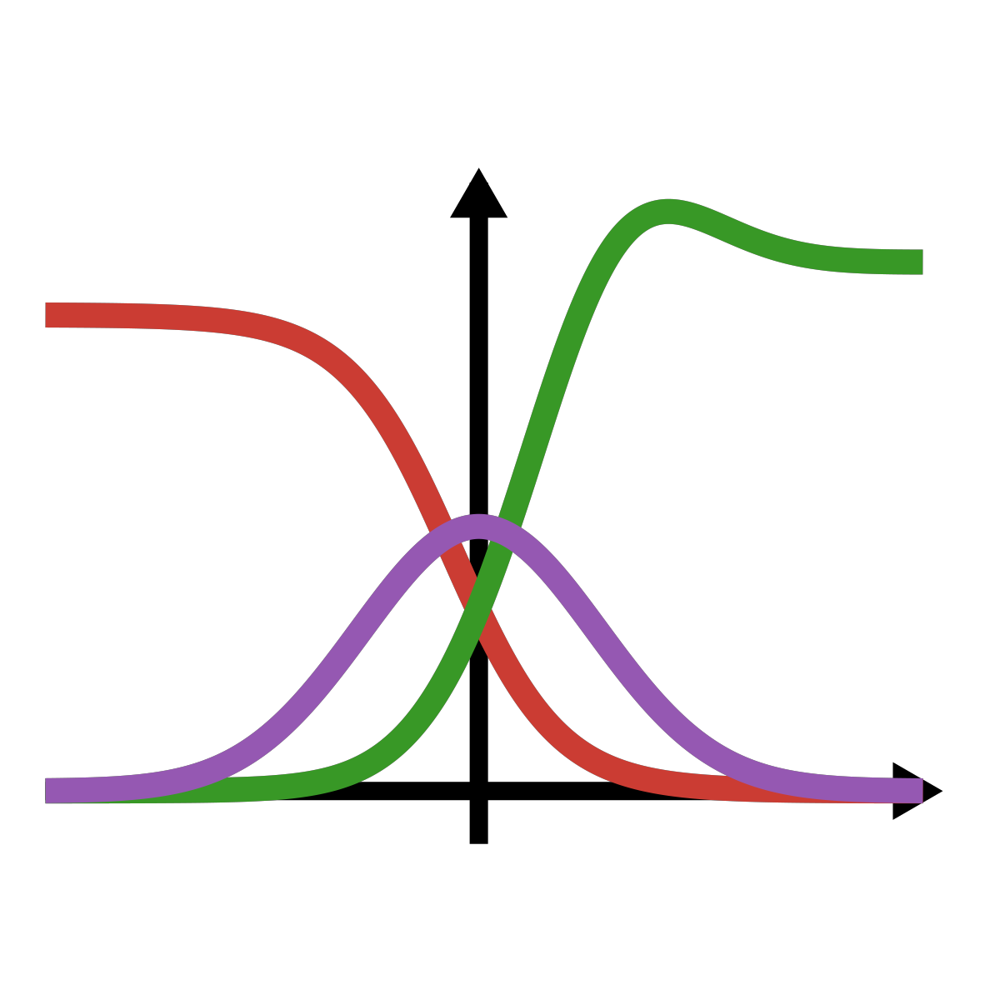

⚛️
Many free-energy functionals
PC-SAFT, SAFT-VR Mie, SAFT-γ Mie, COFFEE, electrolytes, Self-Consistent Field Theory and more, all sharing Clapeyron.jl's equations of state as the underlying bulk model
A comprehensive, extensible library of classical DFT and Self-Consistent Field Theory models, built directly on top of Clapeyron.jl

cDFT intends to provide a comprehensive library of classical Density Functional Theory (cDFT) and Self-Consistent Field Theory models, as well as a simple framework to develop your own! cDFT is built directly on top of Clapeyron.jl and reuses its equations of state as the bulk free-energy model underlying every inhomogeneous calculation — the two packages are meant to be used together.
With cDFT you can compute density profiles, surface/interfacial tensions and adsorption isotherms for fluids next to walls, in pores, around solutes, at vapour-liquid and liquid-liquid interfaces, in microphase-separated copolymer melts, and for electrolytes near surfaces — in 1D, 2D or 3D, on the CPU or GPU, and (via Dynamic DFT) as a function of time as well as space.
using Pkg
Pkg.add(["cDFT", "Clapeyron"])See Installation for optional extensions (plotting, GPU, group-contribution connectivity, Dynamic DFT).
using Clapeyron, cDFT
model = PCSAFT(["methane"])
T, p = 150.0, 1e7
v = Clapeyron.volume(model, p, T, [1.0]; phase=:liquid)
ρbulk = [1/v]
L = cDFT.length_scale(model)
width = 5L
surface = Steele(["graphite"], width)
structure = Uniform1DCart((p, T), ρbulk, [0.5L, width-0.5L], 201)
system = DFTSystem(model, structure, surface)
ρ = initialize_profiles(system)
converge!(system, ρ)ρ is now the converged density profile of liquid methane next to a graphite wall. See Getting Started for the full walkthrough, including plotting the result.
cDFT.jl does not yet have a dedicated publication — for now, please cite the GitHub repository directly. Since every cDFT calculation is built on top of a Clapeyron.jl bulk equation of state, please also cite Clapeyron.jl itself, along with the specific equation of state used (obtainable via Clapeyron.cite(model)) and, where relevant, the original cDFT functional reference (e.g. Sauer & Gross, 2017 for the weighted-density PC-SAFT functional; see each entry under Available Models for its reference).
Pierre J. Walker, California Institute of Technology
Andrés Riedemann, University of Concepción
cDFT.jl is licensed under the MIT license.